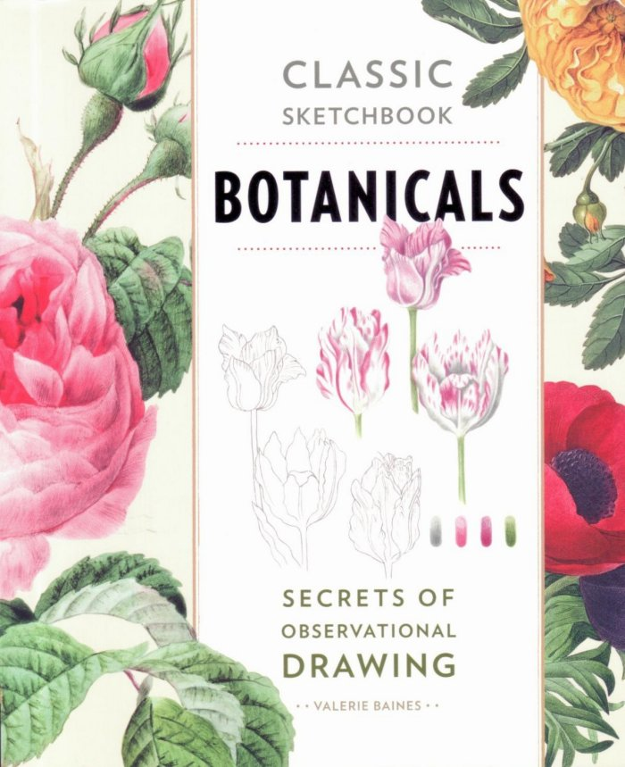

|

|
News
MarchWith longer days and the sun becoming stronger you may be lucky enough to see the first flight of the Brimstone butterfly that spent the winter hidden in the ivy and ladybirds emerging from hibernation, eager to eat greenfly. There should be more early nectar plants around, including Alkanet, Red Dead-nettle (both beloved by bees), Lesser Celandine, Primrose, Lungwort, Wood Anemones, and Sweet Violets, later to be the food plants of various fritillary butterflies. "Pussy Willow" is another sign of spring.
Valerie has a range of pictures, prints and cards available for sale at Pashley Manor in East Sussex.
Publications
NEW BOOK! Wadhurst Sketchbook by Valerie Baines Join Valerie to explore her favourite views around Wadhurst.
"Although I had a very happy up-bringing in suburbia, I began to wish to live in a village, so between the ages of about 9 and 14, I drew and painted my own imaginary 'secret village' with a map, views down each road to the next junction. It had cottages, a farm, a church, a vicarage, a high street with a tea shop, an imposing Town Hall, no school, and lots of children and dogs around. When we came to live in Wadhurst, it epitomized all I had been looking for, with the main street of attractive old houses, having every shop one could want, and in a countryside setting. I have designed the book to take you for a walk from one end of the high street to the other, with a few diversions on the way, starting in Spring, and ending in Winter." Wadhurst Sketchbook can be purchased from Barnett's Books of Wadhurst.
Classic Sketchbook - Botanicals by Valerie Baines  �Classic Sketchbook. Botanicals. Secrets of observational drawing� is about Botanical drawing with coloured pencils, showing examples by Redoute, Hooker, Brueghel, and other well-known Classic Botanical artists. Beside these examples I have created pages taking a particular detail or aspect of their paintings, and describing and explaining their techniques, and how to put them in practice, so that the reader can also understand how to create their own drawings.
This book is published in America, Canada and the U.K.
Guernsey Sketchbook by Valerie Baines Captivated by the natural beauty of Guernsey, Valerie Baines has been visiting the island, and painting its delights, for more than 40 years. The stunning coastal views, charming historic buildings, secluded rural paths and glorious wild flowers are all captured in Valerie's exquisite watercolour paintings. From the harbour at St Peter Port to cliffs strewn with gorse, from rocky bays to wild orchids, Guernsey's rich history and abundant habitat are brought vividly to life by this gifted artist.
Click here to order Guernsey Sketchbook from Amazon.co.uk
�2008, �2009, �2010, �2011 Valerie Baines |

|